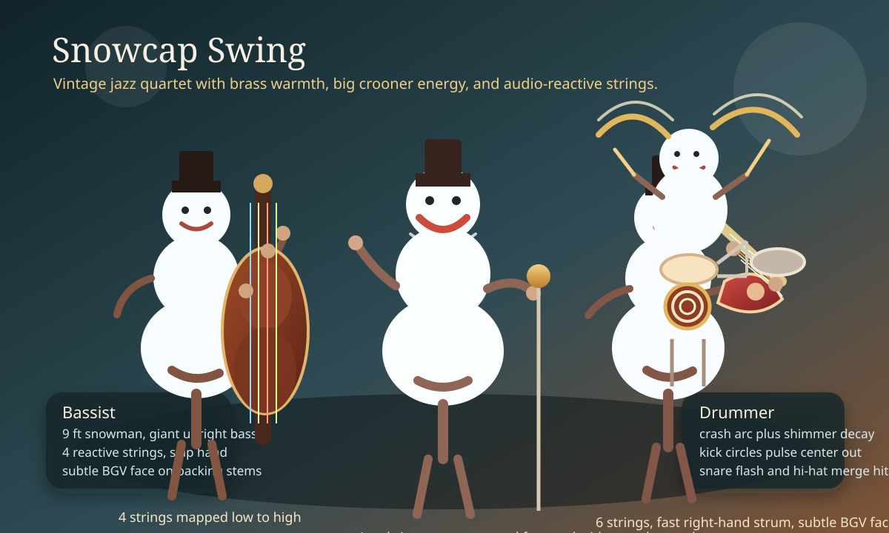

Snowcap Swing
Warm brass palette
Jazz club posture
Crooner lead
This one leans elegant and classic, like the band is playing under old marquee lights on Christmas Eve.
- The bassist reads best with isolated slap notes and deliberate left-hand climbs.
- The guitarist feels like a hollow-body rhythm player with quick offbeat strums.
- The singer has the clearest hero position if you want the face to dominate the yard.